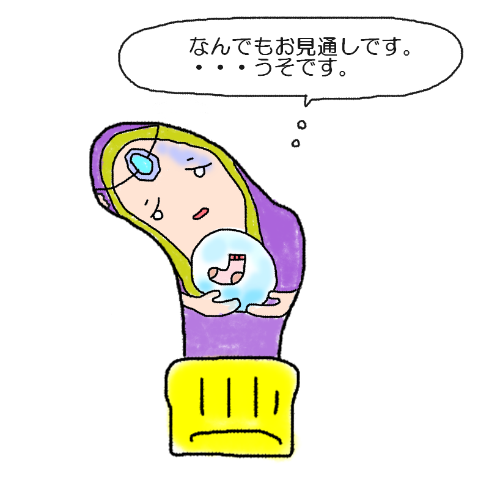

あなたの診断結果
？ ？ ？ （キャラクター名前募集中）小指の先端に穴があく人
【宇宙の真理を語るのにタンスの角には勝てない！
自称・天才予言者型】

「我が水晶にはすべてが見えている……って、なんでまた小指を角にぶつける
運命だけ見落としてるのよ！」
宇宙の真理は語れるのに、目の前のタンスの角には盛大に敗北する占い師！
あなたは、「宇宙の神秘や他人の運命はお手のものなのに、自分の足元に迫る『角の呪い』だけは完璧にスルーしてしまう、お騒がせな占い師タイプ」です。
高尚なターバンを巻いて水晶玉を覗き込み、「今日のあなたの運勢は……」などと優雅に語っているその裏で、暗闇の廊下を歩けば一発レッドカード。
タンスの角、椅子の脚、ドアの枠という名の「絶対避けられない宿命」が、なぜかあなたの小指めがけてピンポイントで突撃してきます。
「見える、私には見える……次に角に小指をぶつけて絶叫する未来が……！」と気づいた時にはすでに遅し。
靴下の小指部分だけが、毎度おなじみ激しい衝撃でパーフェクトに消滅しています。
自分の不運な未来予知には定評があり、靴下に穴があくたび「これも神の思し召しですわ（泣）」と遠い目をする劇的な人生の語り部です。
あなたの特徴
- 他人の未来はハッキリ見えるのに、自分の足元の「角」に対する危機管理能力がゼロ
- 小指をぶつけた瞬間に、あまりの痛さで悟りを開いてしまいそうになる特殊能力
- 「すべては運命でしたのよ」と言い訳しながら、破れた小指をそっと隠すプロの技
- 気づけば靴下の小指部分だけが、神の啓示を受けたかのようにきれいに丸く吹き飛んでいる現象
自分の小指が角にあたる運命は見えないのか、と自分にツッコミを入れたくなるあなた。
その壮大な予測不可能性こそが、あなたの最大の魅力です。
（※次の占いを始める前に、まずは部屋の角にクッションを貼る
未来予知をおすすめします。）
最後にひとつ。
どんなに未来を予言できようとも、
足元だけは油断してはなりません。
次の運命の直撃を受けるその前に、己の小指の未来を占い尽くせ！
このキャラクターに名前をつける
思いついた名前を教えてね！
※このスタンプには日陰に消えたボツキャラが混ざっています
※この診断はただのお遊びです。
※靴下の穴が開く場所には個人差があります。